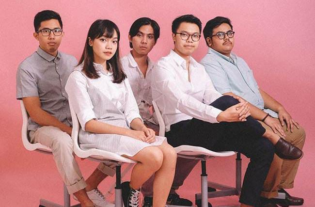
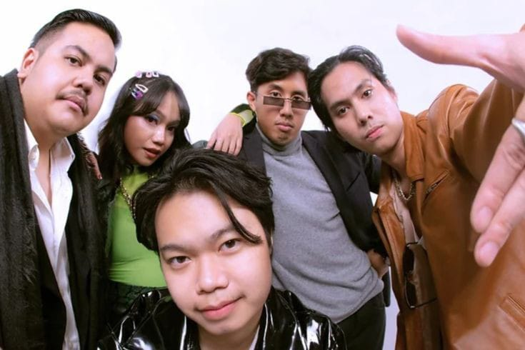

Gallery


Favorite Album (Spotify)
Album terfavorit Reality Club menurut Spotify adalah [Reality Club present]
Detail Awal Karir dan Kesuksesan
Asal dan Sejarah:
Reality Club dibentuk di Jakarta, Indonesia, pada tahun 2016. Mereka terdiri dari beberapa anggota yang memiliki latar belakang musik yang berbeda-beda.Genre Musik:
Musik dari Reality Club sulit untuk dikategorikan dalam satu genre saja karena mereka menggabungkan berbagai elemen dari indie, rock, pop, dan beberapa genre lainnya. Mereka sering menghasilkan suara yang unik dan eksperimental.Pengaruh Musikal:
Beberapa pengaruh musikal dari Reality Club termasuk band-band indie terkenal seperti Arctic Monkeys, The Strokes, Radiohead, dan Tame Impala. Namun, mereka juga menambahkan sentuhan personal dalam karya-karya mereka.Perjalanan Karir:
Sejak pembentukannya, Reality Club telah merilis beberapa single dan album. Mereka telah tampil di berbagai festival musik dan acara-acara live di Indonesia, serta mendapatkan pengakuan dari penggemar musik indie.Pesan dalam Musik:
Reality Club dikenal dengan lirik-lirik mereka yang dalam dan penuh makna. Mereka sering mengangkat tema-tema sosial, emosional, dan filosofis dalam lagu-lagu mereka, menciptakan pengalaman mendalam bagi pendengar mereka.Penggemar dan Dampak:
Reality Club memiliki basis penggemar yang setia di Indonesia dan telah menjadi salah satu band indie yang paling disorot dalam industri musik lokal. Musik mereka telah menginspirasi banyak orang dan menyampaikan pesan-pesan yang kuat kepada pendengarnya.